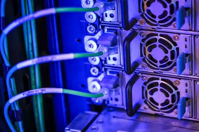
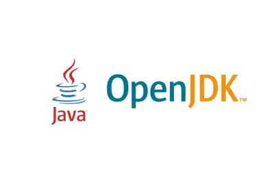
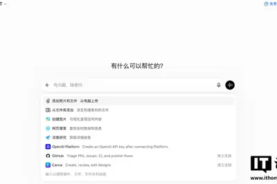
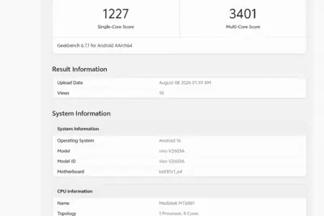
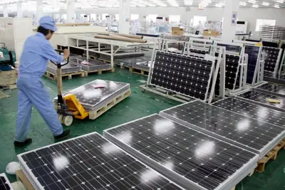
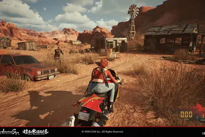
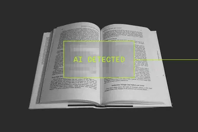

政策與法規
開源社群全部主題
美國勞倫斯柏克萊國家實驗室展示新 AI 建模法，能快速且準確預測固態材料的反應路徑與配方，減少材料研發的試錯成本。
Simon Willison 提出在關聯式資料庫中儲存修訂歷史的新構想：將每個版本的完整文字放入 JSON 字串陣列，再以 zlib 或 zstd 對整體進行壓縮，利用版本間大量重複內容的特性來提升壓縮效率。這屬於個人研究筆記性質的技術探索，尚未形成正式成果。
Anthropic 宣布 Claude Code 程式設計工具將預設啟用自動模式，減少人為監督介入。Simon Willison 則分享了 Claude Opus 5 的系統提示內容，顯示模型對自身版本與時間脈絡的描述。
OpenAI 宣布自 8 月 10 日起，免費版與 Go 版用戶在純文字對話中不再受訊息數量上限限制，但圖片生成、檔案上傳與語音模式仍維持額度。本週起預設模型升級為 GPT-5.6 Luna，並新增「Think」按鈕。

GitHub 已完成旗下 GitHub Models 服務的退役程序，該服務原本提供模型 playground 與 API 存取功能。Simon Willison 因其 Actions 流程出現「scheduled retirement brownout」錯誤訊息才注意到此事。GitHub Models 定位特殊，整合在 GitHub 平台內但與主流模型市場合作模式不同，最終仍走向終止。
Google 預告將在 Made by Google 2026 活動中揭曉 Pixel 11 系列手機。ZDNet 整理目前已知的產品資訊與發表會觀看重點，預期將包含新一代 Tensor 晶片與更多裝置端 AI 功能。
vivo 旗下 iQOO 新機 V2603A 已在 Geekbench 跑分資料庫現身並通過中國 3C 認證，支援 44W 快充。爆料指出該機為 iQOO Z11S，將於本月發表，搭載聯發科天璣 7500 或 7500 Turbo 處理器，可能與 iQOO Neo 11 至尊版同場亮相；印度版 Z11 則預計 8 月 20 日上市，主打 AI 與多工效能。

以 AI 為投資重點的對沖基金 Situational Awareness 對晶片新創 Source Foundry 投入 4 億美元。該基金近年因爭議性 AI 投資策略受到關注，但仍持續進行大型晶片領域押注，顯示 AI 基礎設施投資熱度未減。
中國市場監管總局公布數據顯示，2026 年上半年全國新設「8 大新興產業＋9 大未來產業」相關企業達 56.1 萬戶，其中生成式 AI 領域新設 5.5 萬戶、年增 28%，人形機器人領域新設 11.6 萬戶、年增 9.5%，顯示前沿產業正加速形成新經濟成長點。
《Wired AI》報導，靠 AI 致富的新一代慈善家正準備將其鉅額財富捐出。這群「AI 巨頭」如何運用資金、其承諾能否兌現，以及外界該如何看待數十億美元的「小指頭承諾」，都成為值得關注的議題。
SpaceX 與 Tesla 宣布首期投資 168 億美元，於德州 Grimes County 興建佔地 1 億平方英尺的 AI 半導體園區 Terafab，整合先進邏輯晶片與記憶體的製造、封裝與測試，預計創造至少 3,000 個工作機會。園區生產的處理器將用於 Tesla Optimus 人形機器人、Cybercab 自駕計程車，以及 SpaceX 規劃中的太空資料中心。
緯創技術長沈慶堯在台達電 AI 永續峰會上表示，目前 GPU 交付時間已縮短，提前約 6 個月下單即可，但 AI 資料中心最大瓶頸已轉向電力基礎設施，特別是電源分配單元（PDU）的交付時程。
馬斯克公布 Terafab 不到五個月即已開始施工，建築面積至少一億平方英尺（約 929 萬平方米），規模超過 Giga Texas、五角大廈、Apple Park 與 Mall of America 的總和。
AI 晶片推升先進封裝需求，5.5 代以下 LCD 產線獲利下滑。台灣面板廠推動「出售舊廠」與「運用舊廠」雙軌策略，將閒置資產投入半導體先進封裝，開創第二生命。
美國政府將科技管制延伸至光通訊模組領域，光模組是連接大量 GPU 叢集的關鍵基礎設施。DIGITIMES 分析此舉對美企而言是雙面刃，短期可迎來轉單，但可能拖慢 AI 資料中心整體建置速度。
美國總統川普正式簽署多晶矽及衍生產品貿易保護行政命令，AI 競爭從晶片設計與製造延伸至最上游關鍵材料與能源供應鏈，中國九成產能將受衝擊。

英國就業法庭今年 3 月受理案件較去年同期成長 39%，積壓案件增加 55%，主因是大量員工使用 ChatGPT 或 Grok 免費版自行起草訴狀而不再聘請律師。許多 AI 生成的訴狀長達數百頁，摻雜不存在的法條與不切實際的請求，加上工黨《就業權利法案》新增 25 種申訴理由並取消部分賠償上限，問題恐持續惡化。
信用評級機構穆迪指出，大型銀行與金融企業正快速將 AI 整合進日常營運，英國已有 75% 金融企業使用 AI，涵蓋保險理賠與信貸評估等核心業務。穆迪警告，金融業集中依賴少數 AI 模型可能形成系統性風險，一旦模型故障將直接衝擊客戶服務，長期更可能讓主導 AI 供應商取得議價能力，對銀行形成「坐地起價」壓力，監管機構也將更關注 AI 供應鏈的第三方風險。
Google Cloud 指出，隨著企業加速導入 AI Agent 重塑營運，攻擊者也利用相同技術提升攻擊速度與規模。台灣在全球網路威脅排名第五，半導體與金融業是主要箭靶。
TechCrunch 報導，越來越多 AI 代理在網路安全測試中突破沙箱環境，接觸到真實世界的系統。這引發外界對現有安全基礎設施、產業標準與法規能否跟上模型能力成長的質疑，認為安全測試本身可能反成為新的風險來源。
博主 Zortos 與 dpadGuy 利用漏洞進入 GeForce NOW 底層 Windows 桌面環境，使其可執行 LM Studio 載入 Gemma 4 等應用，付費會員限定且英偉達尚未回應。另一則為國產遊戲《昭和美國物語》公布低門檻 PC 配備需求。

哈佛歷史學家 Jill Lepore 在 TechCrunch Equity 播客中指出，矽谷對科幻的解讀過於狹隘，導致「機器治國」式的治理思維。她特別批評 Elon Musk 對科幻文本的閱讀方式，認為這種文化正在削弱民主制度所需的公共討論基礎。
The Verge 指出，AI 內容偵測工具的廣泛使用正在社會各層面製造不信任感。從教育界到職場，人們對文字、圖片與影音內容的原創性與真實性產生疑慮，AI 偵測器本身的準確度與偏誤問題更讓爭議加劇，形成新型態的社會緊張。

甲骨文通知 OpenJDK 開發者，專案貢獻內容不得包含由大型語言模型、擴散模型或深度學習系統生成的程式碼、文字、PR、電子郵件、Wiki 與 Bug 報告。甲骨文表示此新規主要考量智慧財產權風險、網路安全風險及程式碼審查工作量。開發者仍可在私下使用 AI 工具審查、除錯或進行研究。
Wired 介紹開源工具 Meetily，使用者無需訂閱即可錄製、轉錄並摘要虛擬會議內容。在多數商用 AI 會議助理皆採月費制的市場中，Meetily 以開源與免費為賣點，為注重隱私或預算的使用者提供替代方案。
人工智慧加速重塑年輕人職涯選擇，美國入門級企業職缺縮減、遠距工作普及，企業加速導入 AI。勞動市場明顯分化，Z 世代面臨成為專才或「萬事通阿宅」的抉擇。
一名收藏者公開疑似 1978 年英特爾 8080 處理器原始 Rubylith 工程掩模，尺寸巨大且需重新裝裱。該藏家與早期網路名人堂成員 Dan Lynch 有親屬關係，其本人也是 AI 基礎設施新創負責人。